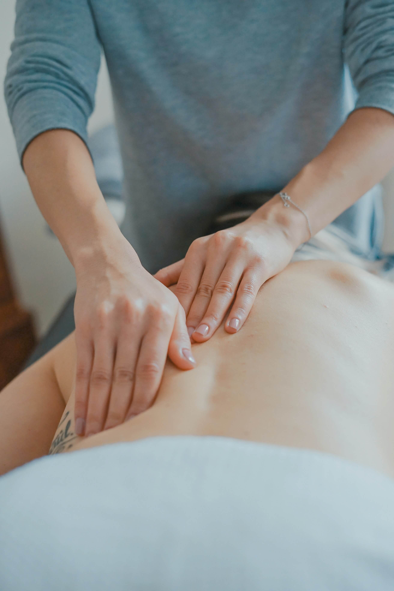

<main>
    <section class="py-4 py-lg-15">
        <div class="container position-relative">
            <h2 class="bg-circle fw-bold ff-noto-serif text-center mb-10">療程介紹</h2>
            <div class="row mb-5">
                <div class="col-12 col-lg-4 offset-lg-4">
                    <h3 class="text-center fw-bold ff-montaga">全身鬆綁順氣舒筋</h3>
                </div>
                <div class="col-12 col-lg-4 d-flex justify-content-end align-items-center">
                    <a class="btn btn-primary fs-6 py-2 px-3 rounded-4 px-lg-7" role="button" href="#">立即預約</a>
                </div>
            </div>
            
            

            <h4 class="ff-noto-serif fw-bold"><i class="fa-solid fa-thumbtack text-secondary me-2"></i>何謂七大脈輪呢？</h4>
            <p class="mb-5">人體主要的脈輪有七個，這七個主要脈輪沿著頭頂至脊椎底部分布，還被稱為<span class="fw-bold">「潛藏於身體深處的內在器官」</span>。<br><br class="d-inline d-lg-none">
                除了七個主要脈輪，身體還有許多的脈輪遍佈全身，就像「穴位」一樣，每個「穴位」、「脈輪」都有其對應器官，影響著情緒跟生理。</p>
            <p class="text-primary fw-bold fs-5 text-center mb-10">讓我們跟著心走～挑選最適合妳的能量精油！<br>
                由七大脈輪為妳接收、消化、分配和傳遞生命的能量，淡化一切不愉快。</p>

            <h4 class="ff-noto-serif fw-bold"><i class="fa-solid fa-thumbtack text-secondary me-2"></i>流程說明</h4>
            <ol class="mb-5">
                <li class="mb-2">專屬能量花精抓周七輪檢測</li>
                <li class="mb-2">全背深度釋壓手技按摩</li>
                <li class="mb-2">海底輪筷舞</li>
                <li class="mb-2">腹輪臍輪魔手按揉暢通</li>
                <li class="mb-2">心輪喉輪肩頸美胸疏通</li>
                <li>眉心輪頂輪釋壓舒刮</li>
            </ol>

            <h4 class="ff-noto-serif fw-bold"><i class="fa-solid fa-thumbtack text-secondary me-2"></i>課程說明</h4>
            <div class="row d-flex flex-column flex-lg-row justify-content-lg-between mb-8 mb-lg-10">
                <div class="col-12 col-lg-6">
                    <p class="fs-5"><i class="fa-solid fa-circle-1"></i>1.專屬能量花精抓周七輪檢測</p>
                    <p>透過身體跟心裡的一個自行溝通平衡，找到屬於自己的能量精油。<br>聞嗅淡淡芳香啟動身體療癒心裡，準備好享受全身七大脈輪spa。</p>
                </div>
                
            </div>

            <div class="row d-flex flex-column flex-lg-row-reverse justify-content-lg-end mb-8 mb-lg-10">
                <div class="col-12 col-lg-6">
                    <div class="h-100 d-flex flex-column justify-content-lg-center">
                        <p class="fs-5"><i class="fa-solid fa-circle-1"></i>2.全背深度釋壓手技按摩 <i class="fa-regular fa-clock ms-2 me-1"></i>40分</p>
                        <p>以專業、純熟的手法，柔中帶勁的深層按摩，讓平日緊繃痠痛的肌肉可以獲得舒緩。<br>
                        <span class="fw-bold">將累積的疲憊壓力逐漸釋放，讓身心都獲得深層放鬆</span>，加上精油的搭配更是大加分。</p>
                    </div>
                </div>
                
            </div>

            <p class="fs-5"><i class="fa-solid fa-circle-1"></i>3.海底輪筷舞<i class="fa-regular fa-clock ms-2 me-1"></i>40分</p>
            <p class="mb-8 mb-lg-10">特殊的通氣手法搭配筷木，<span class="fw-bold">舒緩久坐久站的下半身臀腿，累積在末梢的緊繃也一起排空</span>～還妳輕盈纖腿。</p>


            <div class="row d-flex flex-column flex-lg-row justify-content-lg-between mb-8 mb-lg-10">
                <div class="col-12 col-lg-6">
                    <p class="fs-5"><i class="fa-solid fa-circle-1"></i>4.腹輪臍輪魔手按揉暢通<i class="fa-regular fa-clock ms-2 me-1"></i>20分</p>
                    <p class="mb-8 mb-lg-10">女性不易照顧到的腹腔，深層活絡按摩。<span class="fw-bold">腹宮通～女人就美</span></p>
                </div>
                
            </div>
            
            

            <p class="fs-5"><i class="fa-solid fa-circle-1"></i>5.心輪喉輪肩頸美胸疏通<i class="fa-regular fa-clock ms-2 me-1"></i>20分</p>
            <p class="mb-8 mb-lg-10">輕柔的手技針對七輪的心輪、喉輪，做按摩胸部按摩。<span class="fw-bold">女性乳腺與健康，還有姿勢不良造成的肩頸痠痛也一併改善！</span></p>

            <p class="fs-5"><i class="fa-solid fa-circle-1"></i>6.眉心輪頂輪釋壓舒刮<i class="fa-regular fa-clock ms-2 me-1"></i>10分</p>
            <p class="mb-8 mb-lg-10"><span class="fw-bold">七輪頂端，也是人體最重要的一環。</span>頭部按摩絕對不容忽視，透過指壓的手法搭配刮舒，能讓具有血管收縮跟鬆弛的交感神經得到刺激，達到強身健體與紓緩情緒等的良好效果。</p>

            <div class="d-none d-md-inline bg-star-2 bg-img position-absolute top-0 start-10"></div>
            <div class="d-none d-md-inline bg-star-1 bg-img position-absolute bottom-10 start-10"></div>
            <div class="d-none d-md-inline bg-star-1 bg-img position-absolute top-25 end-0"></div>
            <div class="d-none d-md-inline bg-star-3 bg-img position-absolute bottom-5 end-0"></div>
        </div>
    </section>
</main>